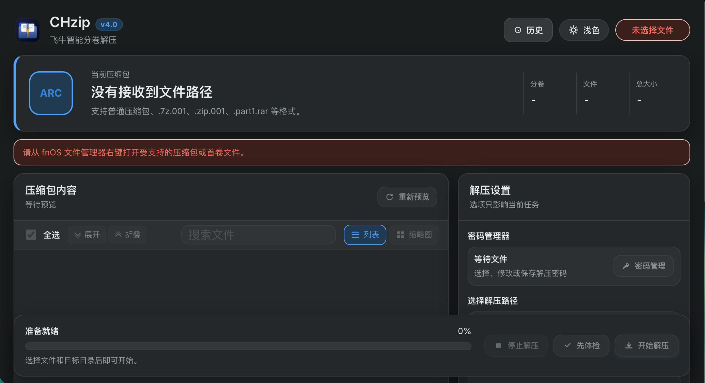

×
面向 fnOS（飞牛私有云）文件管理器右键场景 的专业解压与归档工具 —— 智能分卷合并 · 文件免解压秒开 · 多编码防乱码 · 密码管理，一键完成。
按你的飞牛 NAS 硬件 CPU 架构选择对应安装包，下载即用。也可配合飞牛应用中心手动安装。
适配 Intel 与 AMD 64 位处理器的 NAS 设备（如自建 x86 软路由、联想、极空间、绿联等 x86 机型）。
适配 ARM 64 位架构设备（如树莓派 4/5、RK3588 开发板、飞腾及各品牌 ARM 架构飞牛设备）。
项目全部源码开源，欢迎开发者审查、提交 PR 或 Issue。也可拉取源码自行打包定制。
专为 fnOS 飞牛私有云量身定制的桌面交互体验，原生契合系统风格。

全方位解决 NAS 用户解压过程中的分卷、乱码、大文件和安全性痛点。
.7z.001、.001、.z01、.part1.rar、.r00
等全系列分卷序列，右键首卷自动合并，缺卷时即时告警。
../../ 逃逸攻击）；
解压任务由独立后台 Worker 守护，浏览器关闭不中断，支持实时取消并自动清理未完成半成品目录。
四步极速部署，从下载到右键解压只需 1 分钟。
.fpk 文件。.fpk 上传。.001 或 .part1.rar）。若需要通过 SSH 终端排查应用运行状态或执行打包，可使用以下常用命令：
ps aux | grep 'chzip/worker' | grep -v grepcat /var/apps/CHzip/data/logs/*.log 2>/dev/null基于工业级 7-Zip 内核定制剥离，覆盖全生态主流文件压缩协议。
| 压缩格式 | 扩展名示例 | 分卷自动识别与合并 | 免解压文件树浏览 | 包内媒体直读预览 | 多代码页防乱码 |
|---|---|---|---|---|---|
| 7-Zip 归档 | .7z | 原生完美合并 (.7z.001) | 支持 | 图片 / 代码 / PDF | 支持 |
| ZIP 压缩格式 | .zip, .zip.001, .z01 | 新旧分卷全兼容 | 支持 | 图片 / 代码 / PDF | GBK / UTF-8 / Big5 |
| RAR 归档格式 | .rar, .part1.rar, .r00 | RAR4 / RAR5 自动识别 | 支持 | 图片 / 代码 / PDF | 支持 |
| UNIX 打包压缩 | .tar, .tar.gz, .tar.xz, .tar.zst | 单文件/流式自动识别 | 支持 | 支持代码语法高亮 | UTF-8 优先 |
| 光盘镜像 / 固件 | .iso, .img, .wim, .dmg | 单卷直接挂载直读 | 支持 | 支持文件浏览 | 支持 |
| 漫画 / 电子书 | .cbz, .cbr, .epub | 标准归档包兼容 | 支持 | 缩略图瀑布流 | 支持 |
持续迭代，聆听 NAS 用户与社区的声音。
关于安装、分卷识别与权限的常见疑问解答。
xxx.part1.rar、xxx.7z.001、xxx.zip.001 或 xxx.001）并选择使用 CHzip 打开即可。
CHzip 会自动扫描同目录下匹配的后续所有分卷并无缝拼接解压。如检测到缺失某一分卷，界面会给出清晰友好的提示。